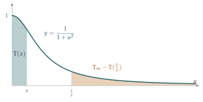

STEP III 2017, Question 6
Read the question before you go on. It is in the STEP Support Programme’s question database: step.maths.org/questions/17-s3-q6
The hook
What is \(\pi\)? At school it is the ratio of a circle’s circumference to its diameter, and \(\sin\) and \(\cos\) are defined by triangles. That is fine for geometry, but it leaves awkward questions. What exactly is “length” along a curve? Why does \(\sin x\) have the Maclaurin series it does? How do we know the addition formulas hold for all angles, not just ones we can draw?
This question shows a completely different way in. Forget triangles and circles. Start from a single integral, \(\mathrm{T}(x) = \int_0^x \frac{\mathrm{d}u}{1+u^2}\), which needs nothing but the definition of the integral from Section 4.1. Define \(\pi\) to be \(2\mathrm{T}_\infty\). Then, using only substitutions, prove that \(\mathrm{T}(\sqrt3) = \frac{\pi}{3}\) and \(\mathrm{T}(\sqrt2 - 1) = \frac{\pi}{8}\), facts you know as \(\arctan\sqrt3 = 60^\circ\) and \(\tan 22\tfrac12^\circ = \sqrt2 - 1\). Trigonometry rebuilt from nothing.
Before you start
You know, secretly, that \(\mathrm{T}(x) = \arctan x\) and \(\mathrm{T}_\infty = \frac\pi2\). The question forbids you to use this, and that is the point: everything must come from the integral. But your secret knowledge is a useful guide.
Which trigonometric identities do parts (i) and (ii) correspond to? (Think of \(\arctan x + \arctan\frac1x\), and the formula for \(\tan(A + B)\).)
Part (i) is \(\arctan x + \arctan\frac1x = \frac\pi2\). Part (ii) is the addition formula \(\tan(A + B) = \frac{\tan A + \tan B}{1 - \tan A\tan B}\) in disguise: with \(u = \tan A\) and \(a = \tan B\), \(v = \tan(A + B)\). The question proves these identities from the integral, without any geometry.
Working it through
Stage 1 The reflection \(u \mapsto 1/u\)
Substitute \(u = 1/w\) in \(\mathrm{T}(x)\). Then \(\mathrm{d}u = -\mathrm{d}w/w^2\), and \(\dfrac{1}{1 + u^2} = \dfrac{w^2}{w^2 + 1}\), so \[\mathrm{T}(x) = \int_{\infty}^{1/x} \frac{w^2}{w^2 + 1}\cdot\left(-\frac{1}{w^2}\right)\mathrm{d}w = \int_{1/x}^{\infty} \frac{\mathrm{d}w}{1 + w^2} = \mathrm{T}_\infty - \mathrm{T}(x^{-1}). \qed\] In other words, the area under \(\frac{1}{1+u^2}\) from \(0\) to \(x\) equals the area from \(\frac1x\) to \(\infty\) (Figure 4.2.1).

Stage 2 The addition substitution
Differentiate \(v = \dfrac{u + a}{1 - au}\) by the quotient rule. Then compute \(1 + v^2\) as a single fraction and compare.
\[\begin{aligned} \frac{\mathrm{d}v}{\mathrm{d}u} &= \frac{(1 - au) + a(u + a)}{(1 - au)^2} = \frac{1 + a^2}{(1 - au)^2}, \\ 1 + v^2 &= \frac{(1 - au)^2 + (u + a)^2}{(1 - au)^2} = \frac{(1 + a^2)(1 + u^2)}{(1 - au)^2}. \end{aligned}\] Dividing, \(\dfrac{1 + v^2}{1 + u^2} = \dfrac{1 + a^2}{(1 - au)^2} = \dfrac{\mathrm{d}v}{\mathrm{d}u}\).■
This says \(\dfrac{\mathrm{d}u}{1 + u^2} = \dfrac{\mathrm{d}v}{1 + v^2}\). So the substitution \(u \mapsto v\) doesn’t change the integrand at all. What does it do to the limits of \(\mathrm{T}(x)\)?
As \(u\) runs from \(0\) to \(x\) (with \(x < \frac1a\), so \(1 - au > 0\) throughout and \(v\) is continuous and increasing), \(v\) runs from \(a\) to \(\frac{x + a}{1 - ax}\). So \[\mathrm{T}(x) = \int_0^x \frac{\mathrm{d}u}{1 + u^2} = \int_a^{(x+a)/(1-ax)} \frac{\mathrm{d}v}{1 + v^2} = \mathrm{T}\!\left(\frac{x + a}{1 - ax}\right) - \mathrm{T}(a). \qed\]
Stage 3 Two more identities
Combining with part (i), twice: \[\mathrm{T}(x^{-1}) = \mathrm{T}_\infty - \mathrm{T}(x) = \mathrm{T}_\infty - \mathrm{T}\!\left(\frac{x + a}{1 - ax}\right) + \mathrm{T}(a) = 2\mathrm{T}_\infty - \mathrm{T}\!\left(\frac{x + a}{1 - ax}\right) - \mathrm{T}(a^{-1}). \qed\] Now rename: put \(y = 1/x\) and \(b = 1/a\). The condition \(x < 1/a\) becomes \(1/y < b\), that is \(y > 1/b\), and \[\frac{x + a}{1 - ax} = \frac{1/y + 1/b}{1 - 1/(by)} = \frac{b + y}{by - 1}.\] So \(\mathrm{T}(y) = 2\mathrm{T}_\infty - \mathrm{T}\!\left(\dfrac{y + b}{by - 1}\right) - \mathrm{T}(b)\).■
Stage 4 Special values
Choose \(y\) and \(b\) in the last identity so that the argument \(\frac{y + b}{by - 1}\) equals \(y\) itself. What do you get?
Take \(y = b = \sqrt3\): then \(y > \frac1b\), and \(\dfrac{\sqrt3 + \sqrt3}{3 - 1} = \sqrt3\). The identity becomes \(\mathrm{T}(\sqrt3) = 2\mathrm{T}_\infty - 2\mathrm{T}(\sqrt3)\), so \[\mathrm{T}(\sqrt3) = \tfrac23\mathrm{T}_\infty. \qed\]
For \(\sqrt2 - 1\), try the addition identity with \(x = a = \sqrt2 - 1\). What is \(\frac{2x}{1 - x^2}\)? And what is \(\mathrm{T}(1)\)?
With \(x = a = \sqrt2 - 1\) (and \(x < \frac1a\) since \(x^2 = 3 - 2\sqrt2 < 1\)), the addition identity says \(2\mathrm{T}(x) = \mathrm{T}\!\left(\frac{2x}{1 - x^2}\right)\). Now \(1 - x^2 = 2\sqrt2 - 2 = 2(\sqrt2 - 1) = 2x\), so \(\frac{2x}{1 - x^2} = 1\), and \(2\mathrm{T}(\sqrt2 - 1) = \mathrm{T}(1)\). Finally, part (i) with \(x = 1\) gives \(\mathrm{T}(1) = \mathrm{T}_\infty - \mathrm{T}(1)\), so \(\mathrm{T}(1) = \frac12\mathrm{T}_\infty\). Therefore \[\mathrm{T}(\sqrt2 - 1) = \tfrac14\mathrm{T}_\infty. \qed\]
Looking back
Substitutions that preserve the integrand. Both key steps used substitutions under which \(\frac{\mathrm{d}u}{1+u^2}\) is unchanged; only the limits moved. Such “symmetries” of an integral are powerful.
Fixed points. The value \(\mathrm{T}(\sqrt3)\) came from choosing numbers that made an expression equal to itself, so an identity became an equation.
Definitions can come from analysis. We never used a triangle, yet we recovered \(\frac\pi3\) and \(\frac\pi8\) (with \(\pi\) defined as \(2\mathrm{T}_\infty\)).
What’s really going on
In a rigorous analysis course, the functions \(\exp\), \(\sin\), \(\cos\) and \(\ln\) cannot simply be assumed; they have to be constructed, and their properties proved. There are three standard approaches. You can define them by power series (\(\sin x = x - \frac{x^3}{3!} + \cdots\)). You can define them as solutions of differential equations, as in the 1986 specimen question in the exercises (\(\mathrm{f}' = \mathrm{f}\), \(\mathrm{f}(0) = 1\) defines \(\exp\)). Or you can define inverse functions by integrals, as here: \(\ln x = \int_1^x \frac{\mathrm{d}u}{u}\) and \(\arctan x = \int_0^x \frac{\mathrm{d}u}{1+u^2}\), and then define \(\pi = 2\int_0^\infty \frac{\mathrm{d}u}{1+u^2}\). Each approach has its strengths, and proving that they all give the same functions is a satisfying exercise. Compare the functional-equation approach of Section 3.8.
Beyond the circle: elliptic integrals
The integral approach generalises in a way the triangle approach cannot. In 1718 Giulio Fagnano studied the arc length of the lemniscate, a figure-of-eight curve, which leads to \(\int_0^x \frac{\mathrm{d}u}{\sqrt{1 - u^4}}\), and found a substitution that doubles the arc, just as our substitution doubled \(\mathrm{T}\). Euler, reading Fagnano’s work in 1751, found a full addition formula, and this led eventually, through Abel and Jacobi, to the theory of elliptic functions: inverse functions of integrals like this one, which are to the lemniscate what \(\sin\) and \(\cos\) are to the circle. We met the same integral in Gauss’s work on the AGM (Section 2.6). Elliptic functions are now central to number theory; the elliptic curves of Section 1.9 are their geometric shadow.
Computing \(\pi\)
The addition identity is also the basis of the most famous formulas for computing \(\pi\). Repeatedly applying it shows, for instance, that \(\mathrm{T}(1) = 4\mathrm{T}(\frac15) - \mathrm{T}(\frac{1}{239})\), which is Machin’s formula of 1706; combined with the series \(\mathrm{T}(x) = x - \frac{x^3}{3} + \frac{x^5}{5} - \cdots\), it gave \(100\) digits of \(\pi\) and stayed the method of choice for two and a half centuries. That is the subject of Section 5.1.
The thinking skill
Look for substitutions that leave the integrand unchanged. They turn into identities for the function the integral defines.
Here \(u \mapsto 1/u\) and \(u \mapsto \frac{u+a}{1-au}\) preserve \(\frac{\mathrm{d}u}{1+u^2}\), and they give the reflection and addition formulas. The same idea, applied to other integrals, underlies the theory of special functions.
Try this next
The exponential and the cosine. Try STEP II Specimen paper, Question 6. It derives the addition formulae for the exponential and the cosine from their differential equations alone. (Hint: for the cosine, find two combinations that ought to be zero, and show that the sum of their squares is constant.)
The inverse sine. Try STEP III 2007, Question 7. It gives the inverse sine the same treatment as this section’s integral, and links the two by a substitution.
An early Machin-type formula. Use the addition identity to show that \(\mathrm{T}(\frac12) + \mathrm{T}(\frac13) = \mathrm{T}(1) = \frac12\mathrm{T}_\infty\).
\(\mathrm{T}_\infty\) is finite. Show that \(\mathrm{T}(x) \leq 1 + \int_1^x \frac{\mathrm{d}u}{u^2} < 2\) for all \(x \geq 1\), explain why \(\mathrm{T}(x) < 2\) for \(0 < x < 1\) as well, and deduce from the monotone convergence theorem (Section 2.2) that \(\mathrm{T}_\infty\) exists.
Further reading
Tom Körner, Calculus for the Ambitious (Cambridge University Press). Builds the elementary functions rigorously, discussing the different approaches.
Walter Rudin, Principles of Mathematical Analysis (McGraw-Hill). The famous “baby Rudin”; the prologue to Chapter 8 constructs \(\exp\), \(\sin\) and \(\cos\) from power series in a few elegant pages. Advanced.
Victor Prasolov & Yuri Solovyev, Elliptic Functions and Elliptic Integrals (American Mathematical Society). For where the lemniscate leads. Advanced.